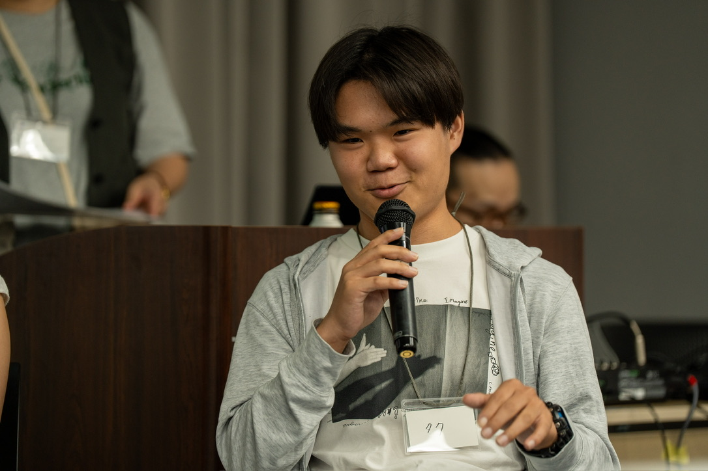

University of California, San Diego
Expected Jun 2029B.S. Cognitive and Behavioral Neuroscience · Minor in Education Studies

Cognitive & Behavioral Neuroscience · UC San Diego
I want to bring what we know about the brain into how people are actually taught. Right now that means developmental research in the lab, and teaching outside it.
Presenting at a research symposium, 2026
I'm an international student from Japan, entering my second year at UC San Diego. My interests sit where cognitive science meets education. In the lab I do developmental research — recording and coding infant behaviour, and learning how careful data collection actually gets done. Outside it, I've taught English to high school students in Tokyo, I run cognitive exercise sessions for people living with Alzheimer's disease in San Diego, and I work with Minna no Ryugakubu helping Japanese students find a route to studying abroad.
The thread connecting them is a question I keep returning to: what makes learning stick, and what helps people keep the abilities they have? I'm majoring in Cognitive and Behavioral Neuroscience with a minor in Education Studies so I can work on it from both directions — the mechanism and the practice.
What I want to do with that is apply research on the brain to how people are actually taught, and use it to raise the quality of education — and to narrow the gap in who gets access to a good one. More broadly, I'm interested in applying what we learn about the brain to society itself. Education is where I want to start, not where I intend to stop.
Read the longer version →B.S. Cognitive and Behavioral Neuroscience · Minor in Education Studies
Minagawa Lab, Keio University — Tokyo, Japan
Chiba Lab, UC San Diego
Brain Exercise Initiative — San Diego, CA
Rinkai Seminar — Japan
Baseball Club — Japan
I'm looking for research and internship opportunities in cognitive science, developmental research, and education. If that's your world, I'd like to hear from you.
tanishimura@ucsd.edu LinkedIn GitHub